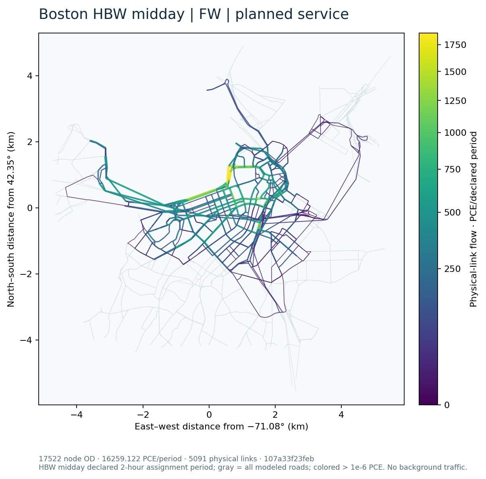
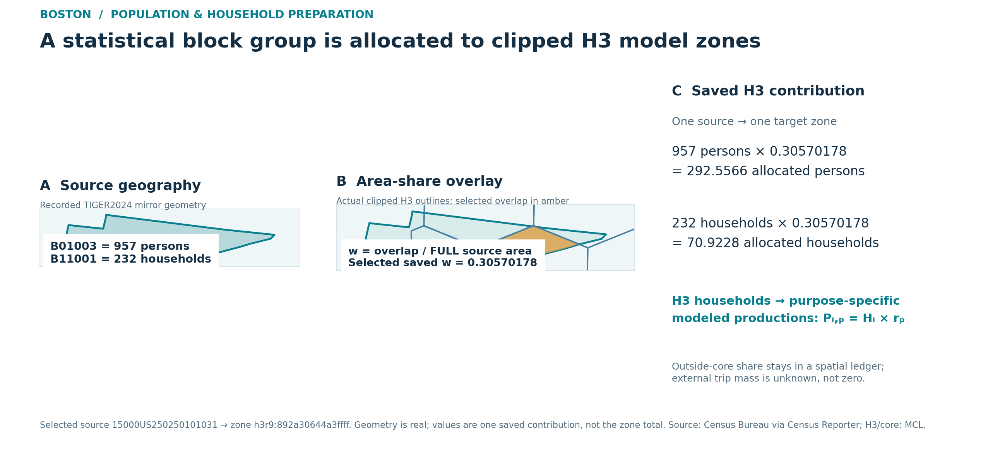
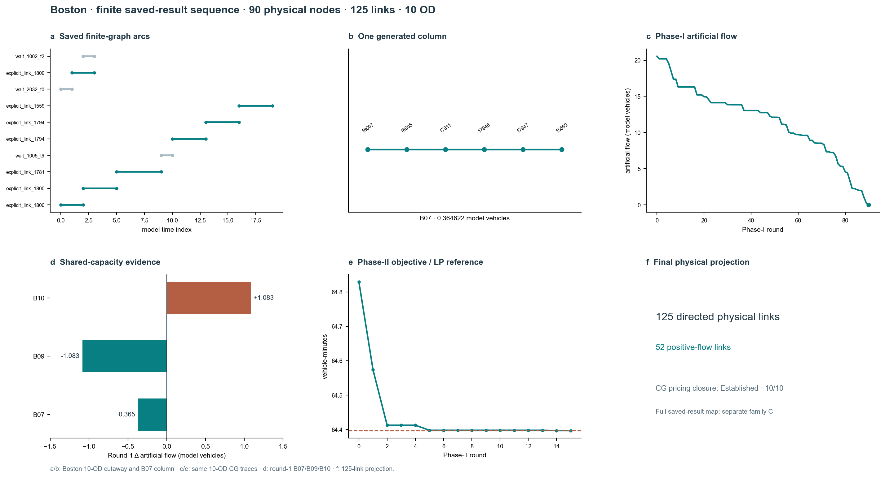

Boston case · GMNS, four stages, GPS and assignment methods
The common nine-module order exposes the original case evidence directly. Model branches, instance sizes and evidence grades remain distinct.
Role in the repository
Real-city GMNS, activity, four-stage and GPS evidence; scalable static assignment; a distinct bounded finite-algorithm holdout.
Boston is the real-city instance of the shared framework. Its separate public branches are (1) the accepted semantic S1/S2 service-feedback example, (2) the conditional absolute-attribute ABS_PLANNED / ABS_OBS_EXPLORATORY sensitivity and fixed ABS_PLANNED FW/full-path/native-L3 comparison, and (3) bounded 90-node/125-link/10-OD finite space–time CG and ADMM R2_S evidence on the same fixed-cost model class. These branches use related Boston source geography but not the same demand identity or optimization objective as the static branch. Start at the project homepage.
GMNS exchanges and layer relationships; the retained four-stage/GPS service-feedback chain; fixed conditional absolute choice; controlled FW/full-path/native-L3 comparisons; new-input FW on 500, 2,000 and all 30,790 source-zone OD tiers; an accepted bounded finite space–time CG pilot, independently full-DAG pricing-closed for its ten demands; and a separate accepted ADMM R2_S holdout with independent conservation, capacity and numerical checks. Neither is citywide. CG figures · ADMM figures and derived table.
The largest accepted FW calculation has 17,522 loaded node OD, 16,259.122 PCE trips, 133 endpoints and 2,147 positive links. Expanded full-path/L3 were resource-gated; the accepted rank-26/52 control is still the separate 26-OD instance. Full scale and resource details.

Scope and statistics
2,852 physical nodes, 5,091 directed physical links in the analysis network; the CG holdout uses 90 nodes, 125 links and ten demands.
| Metric | Accepted instance |
|---|---|
| City physical network | 2,852 nodes; 5,091 directed links |
| Static B1 comparison | 453 physical-node ODs; 1,936.238475 PCE in 2 h |
| Finite CG/ADMM holdout | 90 nodes; 125 links; 10 ODs |
GMNS, zones, and source evidence
GMNS exchange preserves physical IDs, source zones and nonphysical connectors.
The Central Boston analysis network has 2,852 physical nodes, 5,091 directed physical links, 177 H3 r9 zones and nine r7 parents. The GMNS in Action diagrams and record-level read-only query explain source H3 IDs, exported zone/centroid/access mapping, nonphysical connectors, physical link IDs, observation references and saved results. The pinned reader checked node/link/demand separately from the zone schema; source capacities and effective two-hour solver capacities have separate fields. Inspect the actual exchange.
The recorded workflow read U.S. Census Bureau ACS 2024 five-year (2020–2024) B01003 population and B11001 total-household estimates through Census Reporter acs2024_5yr, with its tiger2024 block-group GeoJSON for Massachusetts Suffolk 025, Middlesex 017 and Norfolk 021. After the fixed-core intersection filter, 174 source block groups were area-allocated to 177 clipped H3 r9 zones. In EPSG:32619, each contribution uses area(source ∩ clipped H3) / area(full source polygon), not a renormalized in-core denominator. The resulting core attributes are 171,049.520 persons and 79,537.493 households; outside-core source shares remain a spatial ledger, not measured external trips. Uniformity within each source polygon is an explicit assumption, and source MOEs are not validated H3 MOEs.

| Prepared input | Use in this saved case | Source/reproduction |
|---|---|---|
| H3 households | P_i,p = H_i × r_p with transferred CTPS TDM23.2.0 Table 74 effective mean rates |
ACS fields, crosswalk and read-only verification |
| H3 population | Retained zonal demographic attribute; not multiplied by household rates | Released H3 table |
| MassGIS nonresidential/mixed area | Separate purpose-attraction proxy, not measured jobs or household allocation | Recorded parcel source |
The full source and reproduction page links the actual dataset versions, original access route, official alternatives, six recorded raw hashes, saved tables and standard-library no-solver check. The earlier residential-area/50,000-trip scenario is a different branch.
Demand, transit, and observations
Population and households, MBTA service and exploratory GPS are separately source-qualified; none is a held-out dynamic calibration.
Stage 01 · Trip generation
Area-allocated ACS household estimates and transferred regional rates produce 816,054.67 modelled workday person trips across six purposes. MassGIS activity weights supply attraction context. This is not observed traffic or the 203.66 vehicle trips assigned in the conditional fixed panel. Saved generation chart and table.
Stage 02 · Trip distribution
Gravity/IPF and purpose/time conversion produce directed H3 OD. The saved 177 × 177 HBW midday matrix totals 22,807.22 modelled person trips. The later 36-pair × three-departure panel is a declared selection, not a mass-conserving load of the whole region. Distribution evidence.
Stage 03 · Mode choice
The earlier semantic example uses regional S1 shares and an OD-specific nested response to a service change. The newer conditional absolute-attribute evaluator computes DA/S2/S3/TW probabilities for sufficient-vehicle households from actual OD time/distance/fare attributes. It evaluated 87 of 108 fixed objects; 21 retained unknown inputs. Only 78 common objects and 26 physical endpoint OD pairs were road-loaded. This is a reduced sensitivity, not a complete calibrated TDM23 model. Selected probabilities and parameters.
Matched evidence and feedback
The GMNS route-60 figure shows the same saved 12 source positions before and after path association, with 26 ordered physical-link occurrences and a separate S1 road-result lookup. It is not the route-749 numeric event. In the separate service-feedback trace, route 749 direction 1 stop pair 1788 → 5093 has 86 s sample-derived versus 180 s planned; the declared exploratory input changes itinerary time, mode response, vehicle demand and FW link flows. All 13 interval adjustments are off by default; no independent AM forecast validation is claimed. Follow the saved trace.
Static assignment
Static FW/full-path/L3 and task-local TAPLab-compatible Algorithm B use their declared static instances.
The semantic S1/S2 panel uses the existing static FW solver at about 202.078384 / 202.070733 vehicle trips; its saved maps and service-response interpretation stay here. The separate conditional ABS branch has saved FW values 707.0579230712884 (planned, 203.6604786350987 trips) and 707.043586277782 (exploratory observed-service input, 203.6573680559407 trips) vehicle-minutes. These are scenario-specific model outputs, not causal GPS measurements.
On the exact ABS_PLANNED network/demand/BPR/pool instance, the static assignment comparison exposes actual FW source/result, the solved 130-path uncompressed reference, and both accepted native Diagnostic L3 rank 26 and rank 52 outer-02 path/OD/link results. Five same-instance physical-link maps and a full-precision join table are included there and shown on both project homepages. Native results pass recorded numerical tolerances but are not exact feasible equilibria or an acceleration claim.
The distinct Algorithm B B0/B1 static controls use the official tap-b executable through a task-local TAPLab-compatible lossless adapter. B0 checks the 26-OD interface; the accepted B1 holdout has 453 physical-node OD pairs, 1,936.23847491 PCE in two hours and independent objective 7,922.083942188114 PCE-min. The stock official TAPLab converter changes first-thru-node and OD precision, so no official TAPLab Boston solve was invoked. This conditional cohort is neither citywide nor empirical traffic validation.
Finite time-expanded algorithms
CG has reference-objective agreement and independent pricing closure; ADMM passes its separate R2_S bounded case. Lagrangian remains gated at its frozen criterion.

Current source-matched R2 layout; evidence and gates remain distinct. SVG · Source and exact input hashes · Historical R1 layout.


Representation-level figures and full finite case.
The distinct finite space–time CG pilot uses a fixed-cost hard-capacity LP on 90 physical nodes, 125 directed links and 10 ODs. Its Phase I reaches zero artificial flow at round 90; Phase II matches its identical-graph arc-flow reference, and R4 independently finds no improving ungenerated path below −1e−6 for any demand. The R4 certificate adds 15 zero-final-flow columns and does not change the saved physical-link projection. Do not compare its objective to static FW/Beckmann values.
The ADMM R2_S finite space–time holdout uses the Sioux-selected frozen policy on the bounded 10-OD instance: 253 iterations, objective 64.39729165541078, same-graph LP 64.3968615115296, relative difference 6.68e-6, and passing independent original-unit feasibility gates. It does not inherit CG's pricing certificate, assert identical primal flows, or establish citywide validation. Its accepted derived maps and 125-row physical-link table are rights-cleared, with only previously public GMNS geometry/IDs used for map layout.
The separate Lagrangian R2 transfer recovered a feasible primal but missed its frozen 1% duality-gap gate at 1.1002%; it is not an accepted Boston Lagrangian result. The earlier ADMM R1 record is retained as historical context, not substituted for the accepted R2_S holdout.
Independent verification
Demand, capacity and physical-ID checks are recorded on the bounded CG case; this does not establish citywide DTA.
City-specific evidence and limits
The full source/figure/feedback sequence below remains intact; empirical GPS links are exploratory.
Reproduction
Use the retained experiments and reproduction commands below.
- Semantic four-stage/GPS saved example, including a read-only query database.
- Conditional probabilities, source scope and ABS_OBS FW result.
- FW / finite-path / native-L3 same-instance comparison, figures and limits.
- Bounded finite space–time CG, all figure families, public plot inputs and R4 closure.
- Frozen-policy finite space–time ADMM R2_S holdout, matched figures and derived physical-link table.
- Shared method implementation and optional native reproduction boundary.
python -B tools/gmns/trace_gmns_figure.py --help
python -B tools/mcl_results.py list --case boston
python -B tools/mcl_results.py verify-saved --run boston-abs-planned-l3-rank26-outer02
These are help/read-only saved-record operations; no model is solved by opening this case.